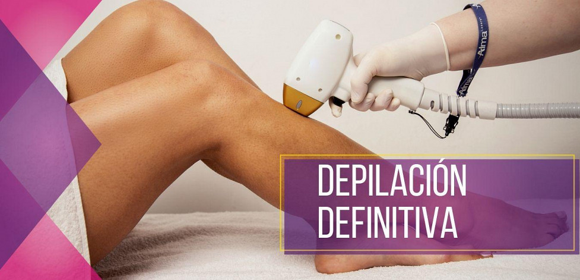

La depilación láser definitiva tiene como objetivo eliminar el vello de nuestro cuerpo, ya sea vello facial o corporal. La energía que contiene el haz de luz del láser es captada por la melanina del pelo y convertida en calor, quemando la matriz y no
volviendo a salir. En aquellas zonas en las que se aplica la depilación láser, el vello dejará de crecer. Por lo tanto, podemos afirmar que es una depilación definitiva.